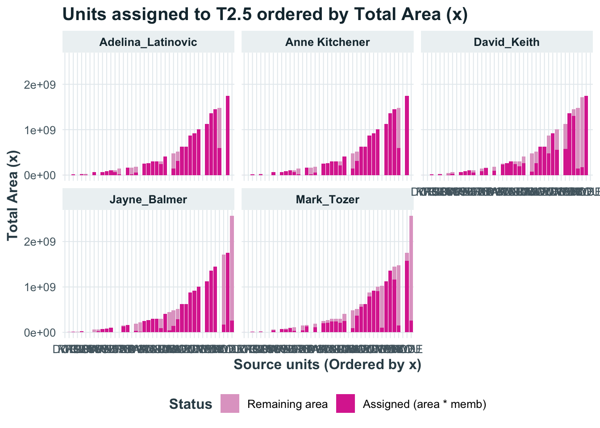
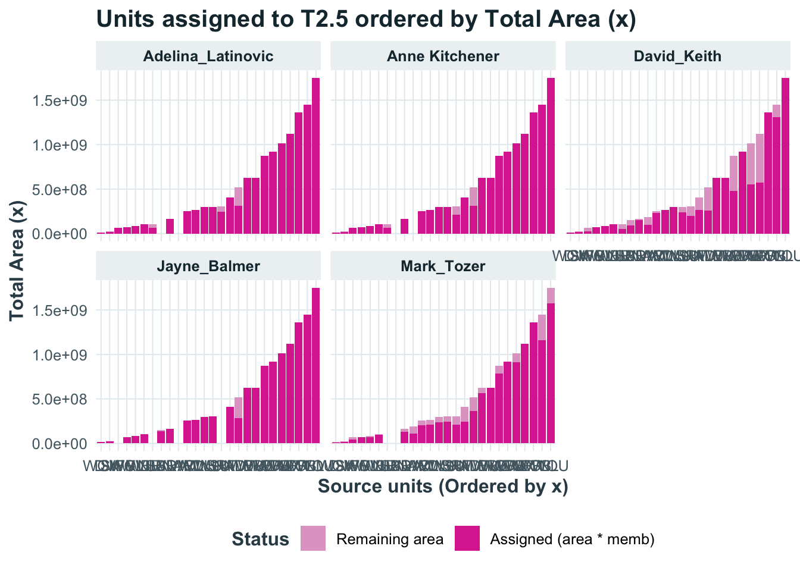
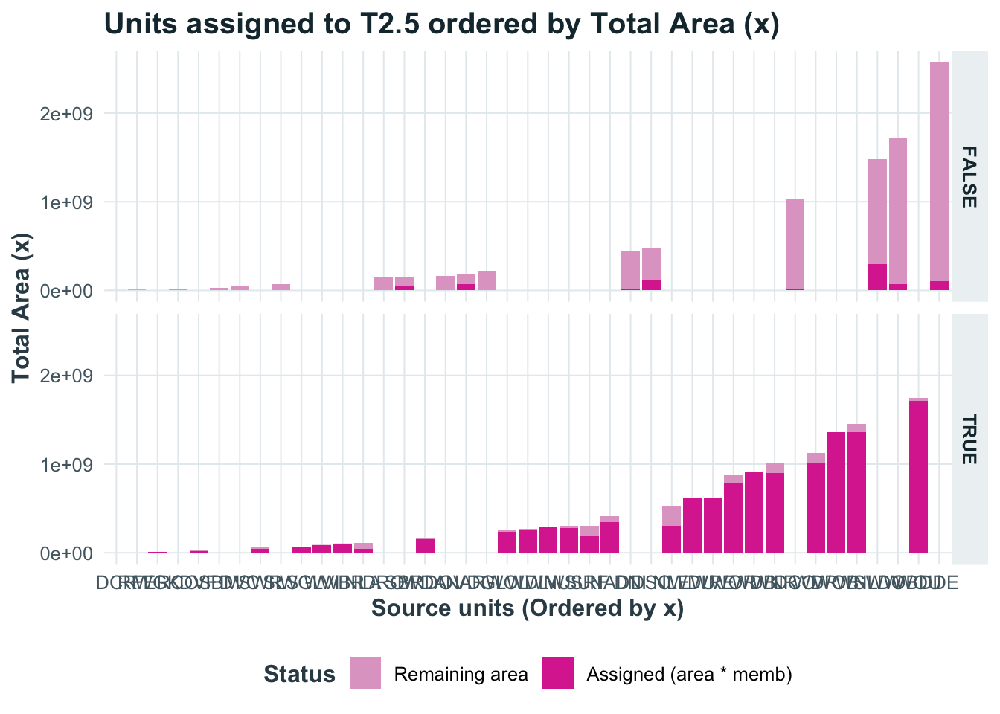
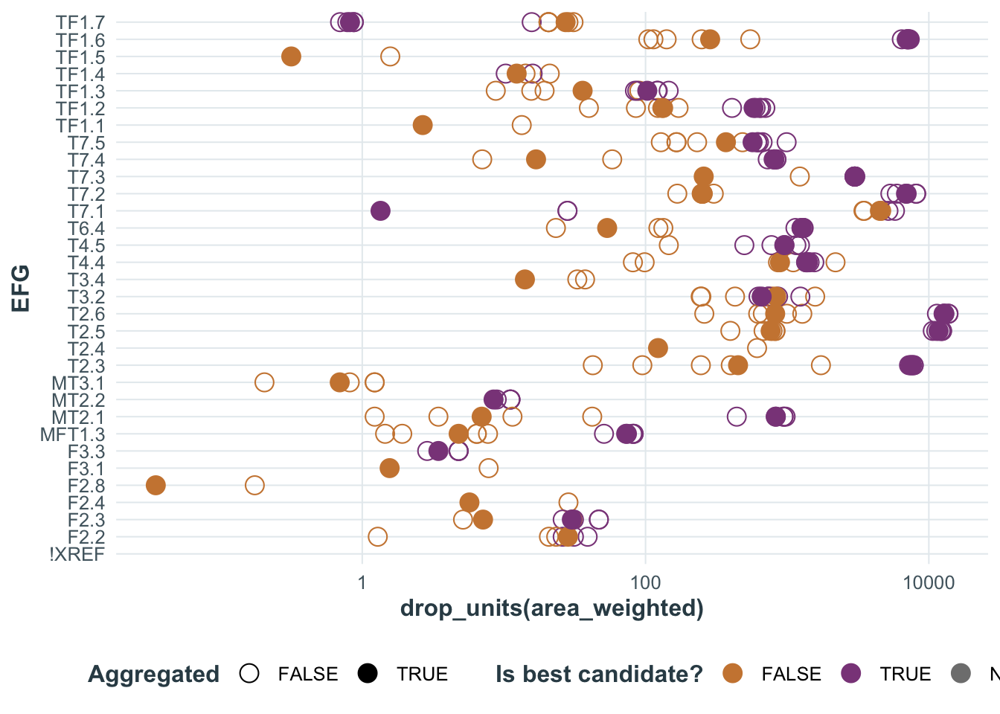

library(sf)
library(ecoSynthesis)
library(dplyr)
library(units)
library(ggplot2)
library(tidyr)12 Area summaries
Our setup for this R session is:
here::i_am("synthesis/EFG-map.qmd")here() starts at /Users/z3529065/proyectos/EIW/TASVEG-XREF/docs-srcoutput_dir <- here::here("../results/XREFs")
source(here::here("../scripts/setup.R"))
load(here::here(output_dir, "lookup-tables.rda"))
load(here::here(output_dir, "memb-summaries.rda"))12.1 Summarising areas
We read the spatial data from the TASVEG dataset using read_sf from the sf package.
We then use the st_area to calculate the spatial extent of each spatial feature.For the next calculation we don’t need to keep the spatial information, so we use but we drop the geometry column to speed up other calculations.
TASVEG_xy <- read_sf(here::here("..", "gisdata", "LIST_TASVEG_50_STATEWIDE", "TASVEG_5_0.shp")) |>
select(VEG_GROUP, VEGCODE, VEGCODE_D)
TASVEG_areas <- TASVEG_xy |>
mutate(area = st_area(geometry)) |>
st_drop_geometry()We have four different membership summary tables created in Chapter 11. Each one of these approaches will lead to different interpretation of spatial data linked to the source concepts and their mapping units.
12.1.1 Weighted area estimates
For calculations of areas we have to consider that each source unit might be represented by multiple map units, and each map unit might be assigned to more that one target unit.
The calculations in this workflow assume that the relationships between source and target units are the same for all mapping unit within each source unit.
This can be calculated using a left join of both tables with a many to many relationship:
EFG_memb_exp_areas <- TASVEG_areas |> # nolint: object_name_linter.
left_join(TASVEG_revised, by = "VEGCODE", relationship = "many-to-many") |>
mutate(EFG = coalesce(EFG, "!XREF"))Furthermore, we need to decide if we want to adjust the areas to represent uncertainty in the assignment of the relationship. One possible way to adjust the areas is to use the membership value as an estimate of the proportion of the area that can be assigned to the target unit.
Using an example of one target unit (T2.5), we can summarise the data by expert and membership and calculate total areas of the units vs the weighed area estimates:
EFG_memb_exp_areas |>
filter(EFG == "T2.5") |>
summarise(
nr_VEGCODE = n_distinct(VEGCODE),
mean_memb = mean(memb),
area_total = set_units(sum(area), "km2"),
area_weighted = set_units(sum(area * memb), "km2"),
.by = c(expert, EFG, best)
) |>
filter(!is.na(area_total))# A tibble: 10 × 7
expert EFG best nr_VEGCODE mean_memb area_total area_weighted
<chr> <chr> <lgl> <int> <dbl> [km^2] [km^2]
1 Anne Kitchener T2.5 TRUE 24 0.969 12730. 12381.
2 Adelina_Latinovic T2.5 TRUE 24 0.972 12730. 12411.
3 David_Keith T2.5 TRUE 26 0.783 13066. 10660.
4 Jayne_Balmer T2.5 TRUE 22 0.975 12400. 12149.
5 Mark_Tozer T2.5 TRUE 24 0.851 12809. 11287.
6 Anne Kitchener T2.5 FALSE 6 0.327 2465. 825.
7 Adelina_Latinovic T2.5 FALSE 7 0.325 2491. 827.
8 David_Keith T2.5 FALSE 5 0.104 3729. 397.
9 Mark_Tozer T2.5 FALSE 7 0.131 5812. 681.
10 Jayne_Balmer T2.5 FALSE 11 0.147 6077. 789.Interpreters differ in the nr of source of unit and the mean membership values assigned to those units. Consequently the total and weighted area estimates will be different.
We need to reshape the data if we want to explore this at the level of the source units:
plot_data <- EFG_memb_exp_areas |>
filter(EFG == "T2.5") |>
summarise(
total_area = sum(drop_units(area)),
.by = all_of(c("expert", "VEGCODE", "memb", "best"))
) |>
mutate(
sid = reorder(VEGCODE, total_area),
assigned_area = total_area * memb,
remaining_area = total_area - assigned_area
) |>
pivot_longer(
cols = c(assigned_area, remaining_area),
names_to = "segment", values_to = "height"
) |>
mutate(segment = factor(segment, levels = c("remaining_area", "assigned_area"))) |>
arrange(sid)ggplot(plot_data, aes(x = sid, y = height, fill = segment)) +
geom_col(position = "stack") +
scale_fill_manual(
values = c("assigned_area" = "#db349e", "remaining_area" = "#e1a6cb"),
labels = c("assigned_area" = "Assigned (area * memb)", "remaining_area" = "Remaining area")
) +
labs(
title = "Units assigned to T2.5 ordered by Total Area (x)",
x = "Source units (Ordered by x)",
y = "Total Area (x)",
fill = "Status"
) +
facet_wrap(~expert) +
theme_wp3()
This plot reveals that some large units have low membership values, thus they contribute to larger total areas but only marginally to the weighted area estimates.
We can choose to keep only the best candidate target unit for these area calculations
ggplot(filter(plot_data, best), aes(x = sid, y = height, fill = segment)) +
geom_col(position = "stack") +
scale_fill_manual(
values = c("assigned_area" = "#db349e", "remaining_area" = "#e1a6cb"),
labels = c("assigned_area" = "Assigned (area * memb)", "remaining_area" = "Remaining area")
) +
labs(
title = "Units assigned to T2.5 ordered by Total Area (x)",
x = "Source units (Ordered by x)",
y = "Total Area (x)",
fill = "Status"
) +
facet_wrap(~expert) +
theme_wp3()
EFG_memb_agg_areas <- TASVEG_areas |>
left_join(TASVEG_summary, by = "VEGCODE", relationship = "many-to-many") |>
mutate(EFG = coalesce(EFG, "!XREF"))EFG_memb_agg_areas |>
filter(EFG == "T2.5") |>
summarise(
nr_VEGCODE = n_distinct(VEGCODE),
mean_memb = mean(prop_memb),
area_total = set_units(sum(area), "km2"),
area_weighted = set_units(sum(area * prop_memb), "km2"),
.by = c(EFG, best)
) |>
filter(!is.na(area_total))# A tibble: 2 × 6
EFG best nr_VEGCODE mean_memb area_total area_weighted
<chr> <lgl> <int> <dbl> [km^2] [km^2]
1 T2.5 TRUE 24 0.909 12730. 11718.
2 T2.5 FALSE 17 0.128 8750. 764.plot_data <- EFG_memb_agg_areas |>
filter(EFG == "T2.5") |>
summarise(
total_area = sum(drop_units(area)),
.by = all_of(c("VEGCODE", "prop_memb", "best"))
) |>
mutate(
sid = reorder(VEGCODE, total_area),
assigned_area = total_area * prop_memb,
remaining_area = total_area - assigned_area
) |>
pivot_longer(
cols = c(assigned_area, remaining_area),
names_to = "segment", values_to = "height"
) |>
mutate(segment = factor(segment, levels = c("remaining_area", "assigned_area"))) |>
arrange(sid)ggplot(filter(plot_data), aes(x = sid, y = height, fill = segment)) +
geom_col(position = "stack") +
scale_fill_manual(
values = c("assigned_area" = "#db349e", "remaining_area" = "#e1a6cb"),
labels = c("assigned_area" = "Assigned (area * memb)", "remaining_area" = "Remaining area")
) +
labs(
title = "Units assigned to T2.5 ordered by Total Area (x)",
x = "Source units (Ordered by x)",
y = "Total Area (x)",
fill = "Status"
) +
facet_grid(best ~ .) +
theme_wp3()
d1 <- EFG_memb_exp_areas |>
summarise(
nr_VEGCODE = n_distinct(VEGCODE),
mean_memb = mean(memb),
area_total = set_units(sum(area), "km2"),
area_weighted = set_units(sum(area * memb), "km2"),
.by = c(expert, EFG, best)
) |>
filter(!is.na(area_total))
d2 <- EFG_memb_agg_areas |>
summarise(
nr_VEGCODE = n_distinct(VEGCODE),
mean_memb = mean(prop_memb),
area_total = set_units(sum(area), "km2"),
area_weighted = set_units(sum(area * prop_memb), "km2"),
.by = c(EFG, best)
) |>
filter(!is.na(area_total))
plot_data <- bind_rows(d1, d2)options(repr.plot.width = 12, repr.plot.height = 18)
ggplot(plot_data) +
geom_point(aes(y = EFG, x = drop_units(area_weighted), shape = is.na(expert), colour = best), size = 4) +
scale_x_log10() +
scale_colour_manual(
values = c("FALSE" = "peru", "TRUE" = "orchid4"),
na.value = "grey50",
name = "Is best candidate?"
) +
scale_shape_manual(
values = c("TRUE" = 19, "FALSE" = 21),
name = "Aggregated"
) +
theme_wp3()Warning: Removed 2 rows containing missing values or values outside the scale range
(`geom_point()`).